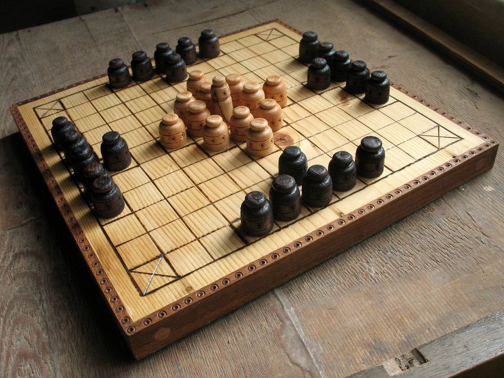

1.A origem do nome viking está associada aos remadores. Não é à toa que a imagem do povo escandinavo no imaginário popular é tão associada aos seus imponentes navios. Uma das teorias mais aceitas na etimologia para a origem do termo “Viking” é a palavra vica, da língua nórdica antiga. Ela é um substantivo bem específico, usado para se referir ao momento em que um remador trocava de posição com outro nas embarcações, uma espécie de turno. Da mesma família vinha o verbo vikja, que significava algo como “virar” ou “trocar”. É bem provável, portanto, que um termo associado ao trabalho dos navios tenha se tornado sinônimo do próprio povo. Se vale a curiosidade, essa é a mesma origem do termo inglês switch, que mantém o significado.
2.Eles chegaram na América antes de Cristóvão Colombo. Por volta do ano 1000, quase 500 anos antes dos espanhóis chegaram à América Central, o conquistador escandinavo Leif Erikson colocou os pés em Vinland, o nome dado aos domínios nórdicos no território que hoje corresponde à costa leste do Canadá. Vestígios arqueológicos da breve permanência Viking ali foram descobertos em 1960 em L'Anse aux Meadows, no norte da ilha de Newfoundland, provando as suspeitas dos historiadores. Hoje, o local é protegido pela UNESCO e considerado patrimônio da humanidade.
Reprodução de uma casa viking no Canadá.
3. Eles não se davam bem com o reino de Carlos Magno. Longe de atrocidades injustificáveis, é mais provável que os esforços de guerra dos vikings na Idade Média visassem manter intactas rotas comerciais e proteger seu povo e sua tradição religiosa da expansão de Carlos Magno, rei dos Francos, que assumiu o trono no ano 768 e liderou um brutal esforço de disseminação da religião cristã. Os incêndios em igrejas e monastérios, que estão associados à demonização de religiões pagãs, eram uma forma de pressão ideológica, ou, em outras palavras, um recado aos exércitos católicos. Como muitas questões religiosas e militares, esse é um tópico de debate entre os historiadores, e não se sabe ao certo até que ponto o ímpeto expansionista nórdico era uma reação ou tinha motivação interna. O avanço viking culminaria com o saque de Paris, em 845.
4. Eles escreviam em runas. Harry Potter, alguém? Antes da introdução do alfabeto latino, sistemas de escrita baseados em runas eram os preferidos pelos falantes de línguas germânicas do norte da Europa. A maior parte das inscrições era feita em pedras verticais. Segundo as teorias mais aceitas, o alfabeto rúnico surgiu na península itálica, e não se sabe como ele teria alcançado a Escandinávia. Embora tenham a aparência de algo indecifrável e místico, quase todas as runas possuem letras correspondentes no nosso sistema. Sua fama mágica vem do fato de que, muito antes de serem aplicadas para fins práticos, as runas eram usadas em amuletos, davam nome a feitiços e eram parte integrante dos rituais religiosos e supertições nórdicas.
Reconstrução de casa Viking na Islândia.
6. As mulheres eram bem respeitadas para os padrões da época. Apesar de notáveis pela violência e o ímpeto conquistador, o povo nórdico dava, ao que tudo indica, uma aula de igualdade de gênero nos seus vizinhos católicos feudais. Se um homem morresse, suas filhas, irmãs, netas ou até sobrinhas podiam herdar suas terras sem problema algum. A irmã ou filha desse homem também poderia assumir o cargo de chefe da família na ausência de outros homens. De maneira previsível, muitos casamentos eram arranjados de acordo com interesses políticos, mas o adultério era permitido e os filhos oriundos dessas relações eram considerados herdeiros dos pais tanto quanto os legítimos. Aos atingir os 20 anos as mulheres eram emancipadas e se tornavam livres, inclusive para viver com outros homens. Não havia distinção legal entre viúvas e solteiras, e o divórcio já era autorizado. Nada de revolucionário para os padrões atuais, mas uma grande revolução em relação à Europa medieval.
7.Eles gostavam muito de jogos de tabuleiro. É a Alemanha que detém o título de maior consumidora de jogos de tabuleiro do mundo. Mas os países nórdicos não ficam atrás. O clima frio da região torna a brincadeira indoors a solução perfeita para o tédio, e isso ocorre desde a era viking. Madeira, ossos e até materiais importados eram usados na confecção dos tabuleiros. Um dos jogos mais populares era o Hnefatafl, que, como o xadrez, envolvia peças brancas e pretas, mas que também usava dados.
Hnefatafl
